컴퓨터활용능력-1급 (2004-10-03 기출문제)
1과목: 컴퓨터 일반
1. 다음 중 정보단위의 개념이 작은 단위에서 큰 단위로 바르게 나열된 것은?
- file - record - field - word
- record - field - word - file
- word - field - record - file
- character - record - field - file
(정답률: 74%)

2. Windows의 인쇄 기능에 대한 설명 중 가장 적절하지 않은 것은?
- 기본 프린터란 인쇄 시 특별히 프린터를 지정하지 않으면 자동으로 사용되는 프린터를 말한다.
- 프린터 등록정보 대화상자를 통하여 공급용지 종류, 인쇄 해상도 등을 선택할 수 있다.
- 인쇄 대기 중인 작업은 취소시킬 수 있다
- 인쇄 중인 작업은 취소할 수는 없으나 잠시 중단시킬 수 있다.
(정답률: 83%)
3. Windows 운영체제에서 [디스크 공간 늘림]에 대한 설명으로 맞는 것은 ?
- 디스크 공간을 더 많이 확보하기 위하여 기존의 자료를 압축 저장한다.
- 디스크 공간을 늘리기 위하여 백업 파일들을 제거한다.
- 디스크 공간을 늘리기 위하여 휴지통을 비운다.
- 디스크 공간을 늘리기 위하여 중복된 자료들을 제거하는 기능이다.
(정답률: 62%)
4. 운영체제의 목적은 사용자에게 컴퓨터를 사용할 수 있는 환경을 제공하여 컴퓨터 시스템을 보다 편리하고 효율적으로 관리하고 이용하는데 있다. 다음 중 운영체제의 목적에 부합하지 않는 것은?
- 신뢰도(reliability) 향상
- 시스템 성능(performance) 향상
- 처리 능력(throughput) 향상
- 응답 시간(response time) 연장
(정답률: 86%)
5. 다음 중 특정한 파일이나 폴더를 마우스 오른쪽 단추를 누른 채 끌면 나타나는 단축메뉴가 아닌 것은?
- 여기에 복사
- 여기로 이동
- 휴지통으로 바로 가기
- 여기에 바로 가기 만들기
(정답률: 83%)
6. 다음 중 디지털 카메라, MP3 PLAYER 등 디지털 기기에서 널리 사용되는 저장장치는?
- 플래시메모리(flash memory)
- ROM
- 카세트 테이프(cassette tape)
- LCD
(정답률: 90%)
7. 다음 중 FTP에 대한 설명으로 옳지 않은 것은?
- 다양한 운영체제(윈도우즈, 유닉스, 리눅스 등)에서 FTP 명령을 제공한다.
- 네트워크 상에서 파일을 전송하거나 수신할 때 사용한다.
- 웹 브라우저에서 FTP를 사용할 수 있다.
- FTP는 TCP/IP 프로토콜에 속하지 않는다.
(정답률: 79%)
8. 고정 IP방식에 의한 TCP/IP 설정 시 반드시 지정해야 할 정보가 아닌 것은?
- DNS 서버
- WINS 서버
- 설치된 게이트웨이(Gateway)
- IP 주소
(정답률: 70%)
9. 동영상 AVI 파일에 대한 설명 중 가장 적절치 않은 것은?
- 마이크로소프트사에서 개발한 동영상 파일 포맷이다.
- 많은 압축 코덱(Codec)들이 존재하기 때문에 다양한 방식으로 파일을 만들 수 있다.
- 마이크로소프트사의 고유 포맷이기 때문에 다른 시스템(매킨토시나 UNIX 등)에서는 그 시스템에 맞게 변환을 해야만 볼 수 있다.
- 화질에 비해 용량이 작기 때문에 스트리밍 서비스에 적합하다.
(정답률: 63%)
10. 수신자에게 전송한 전자우편이 반송되는 경우가 아닌 것은?
- 해당 수신자에게 동일한 메일을 연속해서 전송한 경우
- 메일 주소를 잘못 표기한 경우
- 해당 수신자의 메일 보관함이 가득차 있는 경우
- 해당 수신자가 사용하는 메일 서버(받을 때 사용하는 서버)에 문제가 있는 경우
(정답률: 75%)
11. 다음 중 물리적인 하나의 하드디스크를 용량에 따라 여러 개의 논리적 하드디스크 드라이브로 분할하는 것을 나타내는 용어는?
- 로우레벨 포맷(low-level format)
- 하이레벨 포맷(high-level format)
- 파티션(partition)
- 하드디스크 인터리브(hard disk interleave)
(정답률: 89%)
12. Windows에서 컴퓨터에 설치된 각종 소프트웨어나 하드웨어에 대한 설정 정보 등을 저장하는 장소는?
- 드라이버(Driver)
- 레지스트리(Registry)
- 엑세스(Access)
- 레지스터(Register)
(정답률: 67%)
13. 다음 중 도메인 네임(domain name)에 관한 설명중 거리가 먼 것은?
- 국가 기관(정부 기관)의 경우 "org"나 "or" 도메인을 사용한다.
- 도메인 구조는 오른쪽으로 갈수록 범위가 넓어지는 계층적 구조를 갖는다.
- 도메인 네임은 컴퓨터를 인식하기 위해 숫자로 표시된 IP주소의 사용을 쉽게 하기 위해 영문자로 표현한 것이다.
- 도메인 네임 서버(DNS)에 의해 도메인 네임은 IP주소로 매핑된다.
(정답률: 56%)
14. 다음에서 설명하는 것은 무엇을 설명한 것인가?
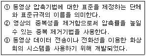
- MPEG(Moving Picture Experts Group)
- JPEG(Joint Photographics Experts Group)
- MIDI(Musical Instrument Digital Interface)
- AVI(Audio Video Interactive)
(정답률: 83%)
15. 운영체제의 종류에서 두 대 이상의 컴퓨터를 함께 묶어서 단일 시스템처럼 사용하는 기술을 무엇이라 하는가?
- 멀티 프로그래밍
- 멀티 프로세싱
- 병렬 처리
- 클러스터링
(정답률: 62%)
16. 다음 중 Windows에서 플러그 앤 플레이(Plug and play) 기능으로 가장 적절한 것은?
- 플러그 앤 플레이 기능을 사용하기 위해서는 하드웨어 제조사에서 배포하는 장치 드라이버가 반드시 필요하다.
- 플러그 앤 플레이 장치는 새로운 하드웨어를 자동으로 감지하여 필요한 소프트웨어를 설치한다.
- 모든 하드웨어 주변기기를 플러그 앤 플레이 기능으로 설치할 수 있다.
- 새로운 하드웨어는 반드시 새 하드웨어 추가 마법사를 통해서 설치하여야 한다.
(정답률: 69%)
17. 다음 중 Windows의 [Windows 종료] 창에서 제공하고 있지 않은 방식은?
- 시스템 종료
- 사용자 로그오프
- 시스템 다시 시작
- MS-DOS 모드에서 시스템 다시 시작
(정답률: 48%)
18. 다음의 장치 중에서 자료가 전송될 최적의 길을 찾아주는 역할을 하며, 네트워크 내의 정보가 다른 네트워크에서도 충분히 읽히도록 해주는 장치는?
- 반복기(repeater)
- 허브(hub)
- 라우터(router)
- LAN카드
(정답률: 85%)
19. 다음 문장의 괄호 안에 들어갈 올바른 용어는?
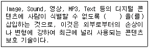
- 파이어마크(firemark)
- 패스워드(password)
- 워터마크(watermark)
- 지문(fingerprint)
(정답률: 71%)
20. Windows에서 파일을 삭제할 때, 삭제된 파일이나 폴더가 일단 특정한 장소에 보관되어 실수를 방지하게 된다. 삭제된 파일을 보관하는 장소는 ?
- 받은 편지함
- 휴지통
- 내컴퓨터
- 네트워크
(정답률: 89%)
2과목: 스프레드시트 일반
21. 배열 수식에 관한 설명으로 틀린 것은 어느 것인가?
- 잘못된 인수나 피연산자를 사용했을 때 "#VALUE!" 에러가 발생한다.
- 빈 칸은 0으로 계산된다.
- 수식의 앞뒤에 중괄호 ‘{ }’가 자동으로 입력된다.
- 배열 수식을 입력할 때에는 [Ctrl]+[Alt]+[Enter]를 누른다.
(정답률: 74%)
22. 다음은 매크로 바로 가기 키 작성에 관한 설명이다. 틀린 것은 ?
- 바로 가기 키는 작성할 매크로의 단축키를 지정하는 것으로 반드시 설정하여야 한다.
- 바로 가기 키 지정시 기본적으로 [Ctrl] 키가 지정되어 있으며 사용자는 새로운 알파벳 소문자를 단축키로 지정하면 되지만, 대문자를 입력하면 자동으로 [Shift]가 자동으로 덧붙여진다.
- 엑셀에서 이미 사용하고 있는 단축키를 매크로의 바로 가기 키로 지정하면 엑셀에서 사용하던 단축키는 사용할 수 없다.
- 바로 가기 키에 [Alt] 키를 지정할 수는 없다.
(정답률: 64%)
23. 열의 개수가 다른 두 개의 표를 아래 그림과 같이 같은 폭으로 출력하고자 할 때 필요한 작업과정으로 올바르게 설명한 것은? 단, 카메라 기능은 사용하지 않는다. ([표2]의 그림을 [표1]의 폭에 맞게 작업하려고 한다.)
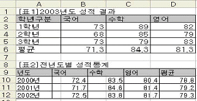
- [표2]를 전체 선택→[Shift]+[편집]-“그림 복사”→[확인]→ [A8] 셀 클릭→[Shift]+[편집]-“그림 붙여넣기”→마우스로 크기 조절
- [표2]를 전체 선택→[Ctrl]+[편집]-“그림 복사”→[확인]→ [A8] 셀 클릭→[Ctrl]+[편집]-“그림 붙여넣기”→마우스로 크기 조절
- [표2]를 전체 선택→복사→[A8] 셀 클릭→[Shift]키+[편집]-“그림 붙여넣기”→마우스로 크기 조절
- [표2]를 전체 선택→복사→[A8] 셀 클릭→[Shift]키+[편집]-“연결하여 그림 붙여넣기”→마우스로 크기 조절
(정답률: 47%)
24. 아래의 예와 같이 각 사원의 보너스 지급액을 수식을 통하여 계산하려고 한다. [D2] 셀의 수식을 완성하여 채우기 핸들을 이용하여 아래를 채우려고 한다. [D2] 셀에 입력될 수식으로 적당한 것은? (보너스액 = 본봉 * 부서별 보너스율)
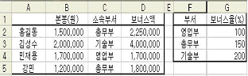
- =VLOOKUP($C2,F2:G4,2,0)*B2/100
- =VLOOKUP($C2,F$2:G$4,2,0)*B2/100
- =VLOOKUP($C2,$F2:$G4,2,0)*B2/100
- =VLOOKUP($C$2,$F2:$G4,2,0)*B2/100
(정답률: 55%)
25. 시나리오의 개념에 대한 설명이다. 가장 거리가 먼 것은?
- 셀 값의 변동에 대한 서로 다른 여러 시나리오를 만들어 변화하는 결과값을 예측하기 위해 사용한다.
- 시나리오 결과는 요약 보고서나 피벗 테이블 보고서로 작성할 수 없다.
- 이자율, 손익 분기점, 주가 분석 등에 많이 사용한다.
- 결과 셀은 반드시 변경 셀을 참조하는 수식으로 입력되어야 한다.
(정답률: 70%)
26. 다음은 쿼리를 사용하여 외부 데이터를 Excel로 가져오는 데 필요한 과정을 세 단계로 요약한 것이다. 세 단계에 속하지 않는 것은?
- 데이터 원본을 지정하여 데이터베이스에 연결
- 쿼리 마법사를 사용하여 원하는 데이터를 선택
- Excel에서 데이터의 서식을 설정
- 외부 데이터를 Excel 데이터로 전환
(정답률: 59%)
27. 워크시트나 통합 문서에서 셀 포인터 이동을 위해 자주 사용되는 바로 가는 키의 종류는 다음과 같다. 이들 중 틀린 것은?
- [Ctrl] + 화살표 키 : 현재 데이터 범위에서 해당 방향의 모서리로 이동
- [Ctrl] + [Home] : 워크시트의 시작 부분으로 이동
- [Home] : 현재 셀이 위치한 열의 시작 부분으로 이동
- [Ctrl] + [PageDown] : 현재 통합문서에서 다음 시트로 이동
(정답률: 55%)
28. 다음 중 셀 서식이 #,##0.0으로 지정된 셀에 데이터값 -0.17이 입력되었을 때 실제로 나타나는 결과값은?
- -0.2
- 0.1
- -0.17
- -0.1
(정답률: 67%)
29. 부분합을 구하기에 앞서 레코드는 무슨 작업이 선행되어야 하는가?
- 부분합을 구하고자 하는 그룹화 항목에 대하여 반드시 오름차순으로만 정렬하여야 한다.
- 부분합을 구하려고 하는 기준이 되는 항목에 대하여 반드시 오름차순이나 내림차순으로 정렬해야 한다.
- 부분합을 구하고자 하는 그룹화 항목이 첫 번째 필드에 있어야 한다.
- 부분합을 구하고자 하는 그룹화 항목이 반드시 숫자이어야 한다.
(정답률: 70%)
30. 다음 중 [파일]-[페이지 설정]의 [시트] 탭에서 설정할 수 있는 항목으로 옳지 않은 것은?
- 인쇄영역 설정
- 반복할 행과 열을 설정
- 눈금선 인쇄
- 축소 확대 배율 지정
(정답률: 61%)
31. 다음 중 프로그래밍 수행시 반복 구문으로 사용하기 어려운 것은?
- Select Case
- Do While
- For Next
- For Each Next
(정답률: 71%)
32. 다음 중 워크시트에 대한 설명 중 틀린 것은?
- 기본 워크시트는 3개의 시트로 구성되어있다.
- 행과 열이 만나는 지점을 셀이라 한다.
- 시트는 숨기기를 할 수 없다.
- 여러 워크시트에 동시에 같은 자료를 입력할 수 있다.
(정답률: 81%)
33. 다음 차트에서 설정되지 않은 옵션은?
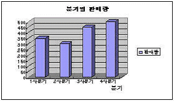
- 범례
- 차트제목
- 축 제목
- 데이터 이름표
(정답률: 72%)
34. 급여일이 홀수 달이면 기본급의 50%를 지급하고, 짝수 달이면 기본급의 100%를 보너스로 지급하고자 한다. [C2] 셀에 입력해야 할 올바른 함수식은? ([C3:C6]까지 채우기 핸들을 사용할 예정이다.)
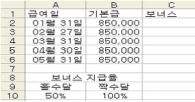
- =IF(MOD(MONTH(A2),2)=1, B2*$A$10, B2*$B$10)
- =IF(MOD(A2)=1, B2*$A$10, B2*$B$10)
- =IF(MONTH(A2)=1, B2*$A10, B2*$B10)
- =IF(MOD(A2)=1, B2*$A10, B2*$B10)
(정답률: 72%)
35. 고급 필터에서 조건을 다음과 같이 설정했을 때 이에 대한 설명으로 옳은 것은?
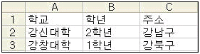
- 학교가 강신대학이거나 2학년이고 주소가 강남구이거나 학교가 강창대학이거나 1학년이고 주소가 강북구인 사람
- 학교가 강신대학이면서 2학년이고 주소가 강남구이거나 학교가 강창대학이면서 1학년이고 주소가 강북구인 사람
- 학교가 강신대학이면서 2학년이고 주소가 강남구이고 학교가 강창대학이면서 1학년이고 주소가 강북구인 사람
- 학교가 강신대학이면서 2학년이거나 주소가 강남구이거나 학교가 강창대학이면서 1학년이거나 주소가 강북구인 사람
(정답률: 71%)
36. 다음 중 '컨트롤 도구 상자'를 실행할 수 있는 버튼은?
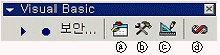
- ⓐ
- ⓑ
- ⓒ
- ⓓ
(정답률: 72%)
37. 다음은 For 문을 이용하여 1에서 100까지의 합을 구한 후 결과를 메시지 상자에 표시하기 위한 TEST 프로시저를 작성한 것으로, 괄호 안에 들어갈 내용을 순서대로 올바르게 나열한 것은?
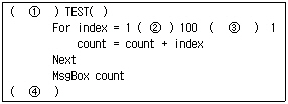
- Property - To - Step - End Property
- Property - Start - Stop - End Property
- Sub - To - Step - End Sub
- Sub - Start - Stop - End Sub
(정답률: 75%)
38. “을지로2가”란 값이 입력된 셀 [B1]을 채우기 핸들로 셀 [B4]까지 드래그 했을 때, [B2], [B3], [B4] 각각의 셀에 입력되어지는 값들이 올바른 것은?
- 을지로2가, 을지로2가, 을지로2가
- 을지로3가, 을지로4나, 을지로5다
- 을지로3가, 을지로4가, 을지로5가
- 을지로2가, 을지로2나, 을지로2다
(정답률: 71%)
39. 다음 중 오류 값에 대한 설명 중 바르지 않는 것은?
- #REF! : 셀 참조가 유효하지 않을 경우
- #NULL! : 교차하지 않은 두 영역의 교차점을 참조 영역으로 지정하였을 경우
- #N/A : 함수나 수식에 사용할 수 없는 데이터를 사용 하였을 경우
- #NUM! : 수식이나 함수 사용 시 문자에 관련된 문제가 발생하였을 경우
(정답률: 59%)
40. 꺾은선형 그래프에서 꺾은선의 "선"의 색상이나 "표식"의 스타일을 바꾸려면, 마우스로 선을 선택한 후 마우스의 오른쪽 버튼을 눌러 단축메뉴를 표시한 뒤 다음 중 어느 메뉴(명령)를 실행시켜야 하는가?
- 데이터 계열 서식
- 차트 종류
- 원본 데이터
- 추세선 추가
(정답률: 78%)
3과목: 데이터베이스 일반
41. 액세스에서 사용할 수 있는 테이블의 이름으로 적절하지 않은 것은?
- 컴퓨터활용능력_응시자명단
- 컴퓨터활용능력.응시자명단
- 컴퓨터활용능력 응시자명단
- 컴퓨터활용능력(응시자명단)
(정답률: 48%)
42. 폼에서 [내보내기]를 통해 다른 형식으로 바꾸어 저장하려고 할 때 저장할 수 없는 형식은 무엇인가?
- 서식 있는 텍스트 형식
- Microsoft Excel
- Paradox
- HTML
(정답률: 69%)
43. 전통적인 파일 처리방식에 비해 데이터베이스를 이용하는 경우의 장점으로 가장 거리가 먼 것은?
- 데이터 공유가 용이하다.
- 프로그램과 독립적으로 데이터의 관리가 가능하다.
- 어플리케이션의 개발 및 유지 보수가 용이하다.
- 데이터를 효율적으로 관리하여 시스템에 문제가 발생하면 복구가 쉽다.
(정답률: 67%)
44. 다음 중 액세스에서 보고서 작성시에 '그룹화'의 개념에 대한 설명으로 가장 옳지 않은 것은?
- 데이터를 특정 필드를 기준으로 데이터를 구분하여 표시하는 기능이다.
- 특정 필드를 기준으로 그룹화를 하는 경우 데이터는 그 필드를 기준으로 정렬되어 표시된다.
- 그룹에 대한 머리글이나 바닥글을 표시할 수 있다.
- 특정한 값을 갖는 데이터를 표시하지 않도록 설정할 수 있다.
(정답률: 60%)
45. 다음의 If 문에서 괄호 안에 들어갈 내용으로 옳은 것은?
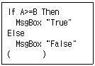
- Else
- Else If
- End If
- MsgBox
(정답률: 76%)
46. 다음 중 보고서를 내보낼 때 선택할 수 있는 파일 형식이 아닌 것은?
- 텍스트 파일
- HTML 문서
- 워드 파일
- 엑셀 문서
(정답률: 71%)
47. 다음 질의문에 대한 설명으로 알맞은 것은?
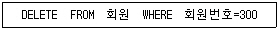
- 회원 테이블에서 회원번호가 300인 회원의 레코드를 검색한다.
- 회원 테이블에서 회원번호가 300인 필드의 값을 검색한다.
- 회원 테이블에서 회원번호가 300인 회원의 레코드를 삭제한다.
- 회원 테이블에서 회원번호가 300인 필드의 값을 삭제한다.
(정답률: 76%)
48. 다음 중 명령단추 마법사 대화상자에서 레코드 탐색을 선택 했을 때 사용할 수 없는 매크로 함수는 무엇인가?
- 다음 찾기
- 다음 레코드로 이동
- 이전 찾기
- 이전 레코드로 이동
(정답률: 57%)
49. 다음 중 액세스를 이용하여 테이블을 작성할 때 고려하지 않아도 될 사항은?
- 필드 크기
- 레코드 수
- 필드의 데이터 형식
- 필드 이름
(정답률: 56%)
50. 다음 그림과 같은 보고서에서 보고서 바닥글의 '총합계'란에 전체 레코드에 대한 '임금적용시간'과 '임금단가'를 곱한 값의 합계를 넣고자 한다. 옳은 식은?
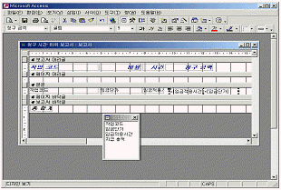
- =SUM([임금적용시간] * [임금단가])
- =[임금적용시간] * [임금단가]
- =COUNT([임금적용시간] * [임금단가])
- =AVG([임금적용시간] * [임금단가])
(정답률: 78%)
51. <제품> 테이블에서 '판매일자'라는 필드에 2003년 1월 1일부터 2003년 12월 31일까지의 날짜만 입력되도록 하는 유효성 검사 규칙으로 가장 옳은 것은?
- in (#2003/01/01#, #2003/12/31#)
- between #2003/01/01# and #2003/12/31#
- in (#2003/01/01#-#2003/12/31#)
- between #2003/01/01# or #2003/12/31#
(정답률: 83%)
52. 릴레이션 R1에 속한 속성(Attribute) A와 릴레이션 R2의 기본 키인 B가 동일한 도메인상에서 정의되어 있다. 이 때 R1의 속성 A에 대한 이름과 제약조건이 맞게 짝지어진 것은?
- 외래 키 - 참조 무결성 제약조건
- 외래 키 - 개체 무결성 제약조건
- 기본 키 - 참조 무결성 제약조건
- 기본 키 - 개체 무결성 제약조건
(정답률: 68%)
53. [관계 편집] 대화상자에서 다음 그림과 같이 설정한 경우에 대한 설명으로 가장 옳은 것은?
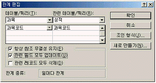
- <성적> 테이블의 '과목코드' 필드 값을 변경하면 이에 관련된 <과목> 테이블의 '과목코드' 필드 값도 모두 변경된다.
- <성적> 테이블에서 참조하는 있는 <과목> 테이블의 '과목코드' 필드의 값은 임의로 변경할 수 없다.
- <과목> 테이블의 특정 레코드를 삭제하면 이를 참조하는 <성적> 테이블의 레코드도 삭제된다.
- <과목> 테이블의 '과목코드' 필드 값을 변경하면 이를 참조하는 <성적> 테이블의 '과목코드' 필드 값도 모두 변경된다.
(정답률: 57%)
54. 자동 폼(Form)을 이용하여 폼을 새로 만들고자 할 때 선택할 수 있는 형식이 아닌 것은?
- 컬럼(column) 형식
- 행(row) 형식
- 탭 형식
- 데이터 시트
(정답률: 55%)
55. 회원(회원번호, 이름, 나이, 주소) 테이블에서 주소가 '인천'인 회원의 이름과 나이를 검색하되, 나이가 많은 순으로 검색하는 질의문으로 옳은 것은?
- SELECT * FROM 회원 WHERE 주소='인천' ORDER BY 나이 ASC
- SELECT 이름, 나이 FROM 회원 WHERE 주소='인천' ORDER BY 나이 ASC
- SELECT* FROM 회원 WHERE 주소='인천' ORDER BY 나이 DESC
- SELECT 이름, 나이 FROM 회원 WHERE 주소='인천' ORDER BY 나이 DESC
(정답률: 66%)
56. 다음 중 각 매크로함수에 대한 설명으로 가장 잘못된 것은?
- RunCommand - 지정한 응용 프로그램의 명령어를 실행한다.
- OutputTo - 지정한 데이터베이스 개체를 다른 형식으로 내보낸다.
- TransferText - 텍스트 파일을 액세스 테이블로 가져온다.
- OpenReport - 보고서를 여러 보기 형식으로 열거나 인쇄한다.
(정답률: 45%)
57. 릴레이션 A에는 60개의 튜플이 있고, 다른 릴레이션 B에는 30개의 튜플이 있다. 이 두개의 릴레이션의 카티젼 곱(Cartesian Product) 연산을 실행한 후의 튜플의 수는 몇 개인가?
- 1800
- 30
- 90
- 2
(정답률: 72%)
58. 다음에서 설명하는 컨트롤로 가장 적절한 것은?
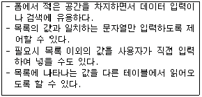
- 옵션 그룹
- 콤보 상자
- 탭 컨트롤
- 목록 상자
(정답률: 61%)
59. 아래 표와 같은 성적표를 읽어 두 학생 각각의 평균점수를 구하려고 한다. 다음 중 가장 알맞은 SQL 문은?
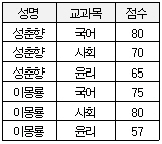
- SELECT 성명, SUM(점수) FROM 성적 ORDER BY 성명
- SELECT 성명, AVG(점수) FROM 성적 ORDER BY 성명
- SELECT 성명, SUM(점수) FROM 성적 GROUP BY 성명
- SELECT 성명, AVG(점수) FROM 성적 GROUP BY 성명
(정답률: 63%)
60. 다음 중 보고서를 구성하는 구역(요소)으로 가장 거리가 먼 것은?
- 폼 머리글
- 페이지 머리글
- 보고서 머리글
- 그룹 머리글
(정답률: 69%)
이유는 다음과 같습니다.
- Character: 가장 작은 정보 단위로, 하나의 문자를 나타냅니다.
- Word: 여러 개의 문자가 모여 하나의 의미를 가지는 단위입니다.
- Field: 여러 개의 관련된 정보를 모아 하나의 단위로 묶은 것입니다. 예를 들어, 학생 정보에서 학생의 이름, 학번, 전공 등이 하나의 필드가 될 수 있습니다.
- Record: 여러 개의 필드가 모여 하나의 레코드를 구성합니다. 예를 들어, 학생 정보에서 각 학생의 이름, 학번, 전공 등이 하나의 레코드가 됩니다.
- File: 여러 개의 레코드가 모여 하나의 파일을 구성합니다. 예를 들어, 학생 정보 데이터베이스에서 모든 학생 정보가 하나의 파일이 됩니다.
따라서, 정보단위의 개념이 작은 단위에서 큰 단위로 나열하면 "word - field - record - file"이 됩니다.